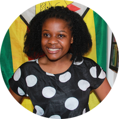

|  | Yolanda Nyasha ChigijiBachelor of Science Engineering and Computer ScienceContact Details |
| Davis Projects for Peace Grant | Recipient | May 2019 |
| Bridge Up Scholarship | Recipient | September 2018-May 2019 |
| United States Achievers' Program | Member | April 2016-Present |
| House Sustainability Challenge | Recipient | April 2018 |
| Microelectronics | Computer Networks | Electrical Machines and Systems |
| Circuit Theory | Thermodynamics | Signals and Systems |
| Mechanics | Fluid Dynamics | Fundemental Engineering Principles |
| Python programing | Probability and Statistics | Data Structures through Java |
| Computer Graphics | Analogue Electronics | Renewable Energy Materials |
| Physics | Chemistry | Introduction to Microeconomics |
The number of stars represent my proficiency in each of the skills with 1 being the least and 5 being the most
| Soldering | ⭐️⭐️ | JavaScript | ⭐️⭐️⭐️ |
| AutoCAD | ⭐️⭐️⭐️ | MATLAB | ⭐️⭐️⭐️⭐️ |
| Java | ⭐️⭐️⭐️⭐️⭐️ | Blender | ⭐️⭐️⭐️⭐️ |
| Linux | ⭐️⭐️⭐️⭐️ | Eclipse | ⭐️⭐️⭐️⭐️⭐️ |
| Solid works | ⭐️⭐️⭐️ | Python | ⭐️⭐️⭐️⭐️⭐️ |
| RStudio | ⭐️⭐️⭐️⭐️ | Laser Cutting | ⭐️⭐️⭐️⭐️⭐️ |
| C Programming Language | ⭐️⭐️⭐️⭐️ | Arduino | ⭐️⭐️⭐️⭐️⭐️ |
| Microsoft Word | ⭐️⭐️⭐️⭐️⭐️ | Spice(Eagle) | ⭐️⭐️ |
| Microsoft Excel | ⭐️⭐️⭐️⭐️⭐️ | Powerpoint | ⭐️⭐️⭐️⭐️⭐️ |
| HTML | ⭐️⭐️⭐️⭐️⭐️ | CSS | ⭐️⭐️⭐️⭐️⭐️ |
| Ndebele/Zulu | ⭐️⭐️⭐️⭐️⭐️ | Shona | ⭐️⭐️⭐️⭐️⭐️ |
| jQueery | ⭐️⭐️⭐️ | Node.js | ⭐️⭐️⭐️⭐️ |
| BootStrap | ⭐️⭐️⭐️⭐️⭐️ | React.js | ⭐️⭐️⭐️⭐️ |
| Django | ⭐️⭐️⭐️ | FireBase | ⭐️⭐️⭐️ |
| MongoDB | ⭐️⭐️ | APIs | ⭐️⭐️⭐️ |